Untold Tales of Spider-Man (1995 - 1997)
| Comic Book | Release Date | Cover |
|---|---|---|
| Untold Tales of Spider-Man #-1 There's a Man who Leads a Life of Danger! | 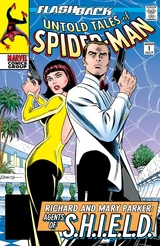 | |
| Untold Tales of Spider-Man #1 To Serve and Protect? | 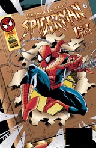 | |
| Untold Tales of Spider-Man #2 Castles in the Air | 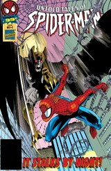 | |
| Untold Tales of Spider-Man #3 Sand Blasted | 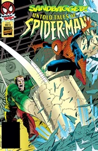 | |
| Untold Tales of Spider-Man #4 The Measure of a Man | 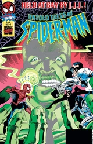 | |
| Untold Tales of Spider-Man #5 Vulture on the Wing! | 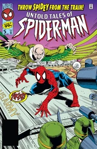 | |
| Untold Tales of Spider-Man #6 Double Jeopardy | 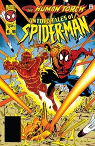 | |
| Untold Tales of Spider-Man #7 On the Trail of the Amazing Spider-Man! | 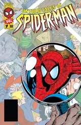 | |
| Untold Tales of Spider-Man #8 Harry's Story | 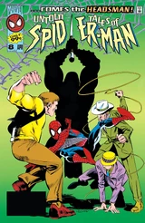 | |
| Untold Tales of Spider-Man #9 Cry...Lizard! | 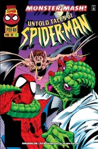 | |
| Untold Tales of Spider-Man #10 Call her...Commanda! | 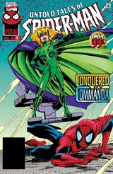 | |
| Untold Tales of Spider-Man #11 Shock Follows Shock! | 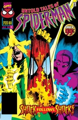 | |
| Untold Tales of Spider-Man #12 The Secrets of Betty Brant! | 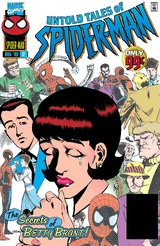 | |
| Untold Tales of Spider-Man #13 Without Warning | 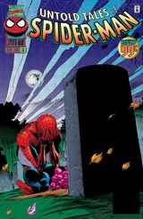 | |
| Untold Tales of Spider-Man #14 One Thing Right | 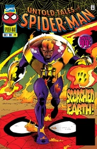 | |
| Untold Tales of Spider-Man #15 The Battle for the Daily Bugle! | 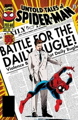 | |
| Untold Tales of Spider-Man #16 The Boy Next Door | 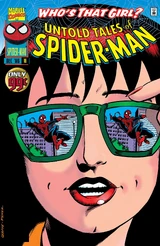 | |
| Untold Tales of Spider-Man #17 Spidey Battles Hawkeye the Marksman | 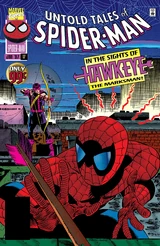 | |
| Untold Tales of Spider-Man #18 Unseen Dangers | 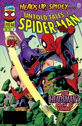 | |
| Untold Tales of Spider-Man #19 Eight Arms To Hold You! | 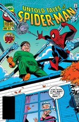 | |
| Untold Tales of Spider-Man #20 Wings of Hatred | 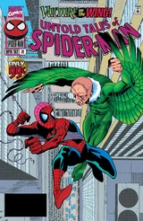 | |
| Untold Tales of Spider-Man #21 Menace! | 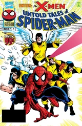 | |
| Untold Tales of Spider-Man #22 The Spider and the Scarecrow | 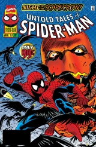 | |
| Untold Tales of Spider-Man #23 In the Shadow of the Crime-Master | 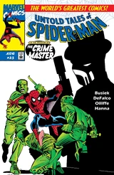 | |
| Untold Tales of Spider-Man #24 What Would Spidey Do?! | 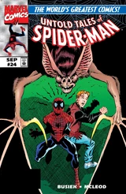 | |
| Untold Tales of Spider-Man #25 Bad Men On Campus | 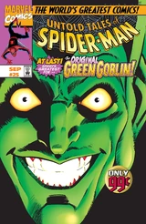 |